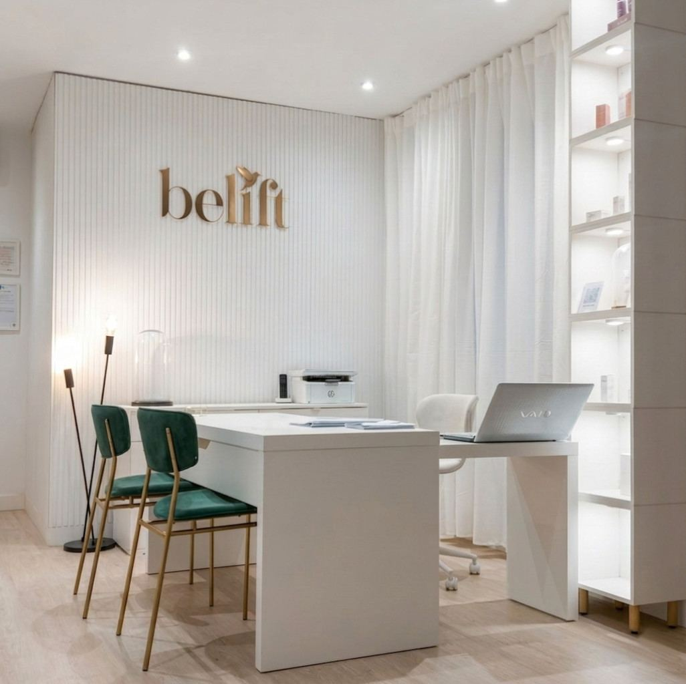
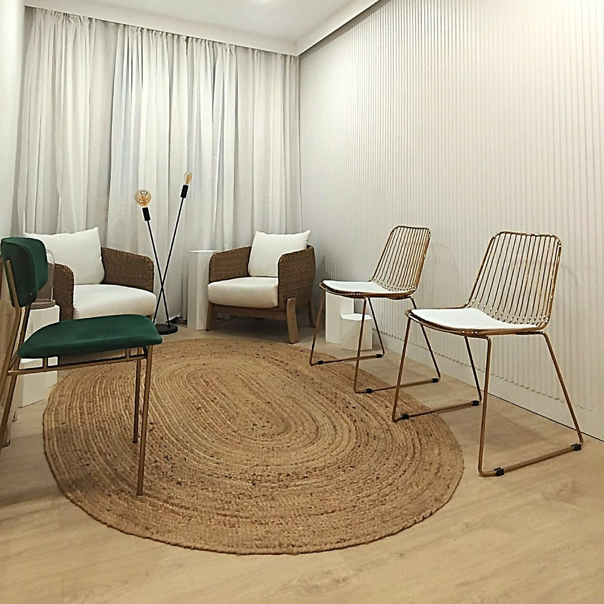
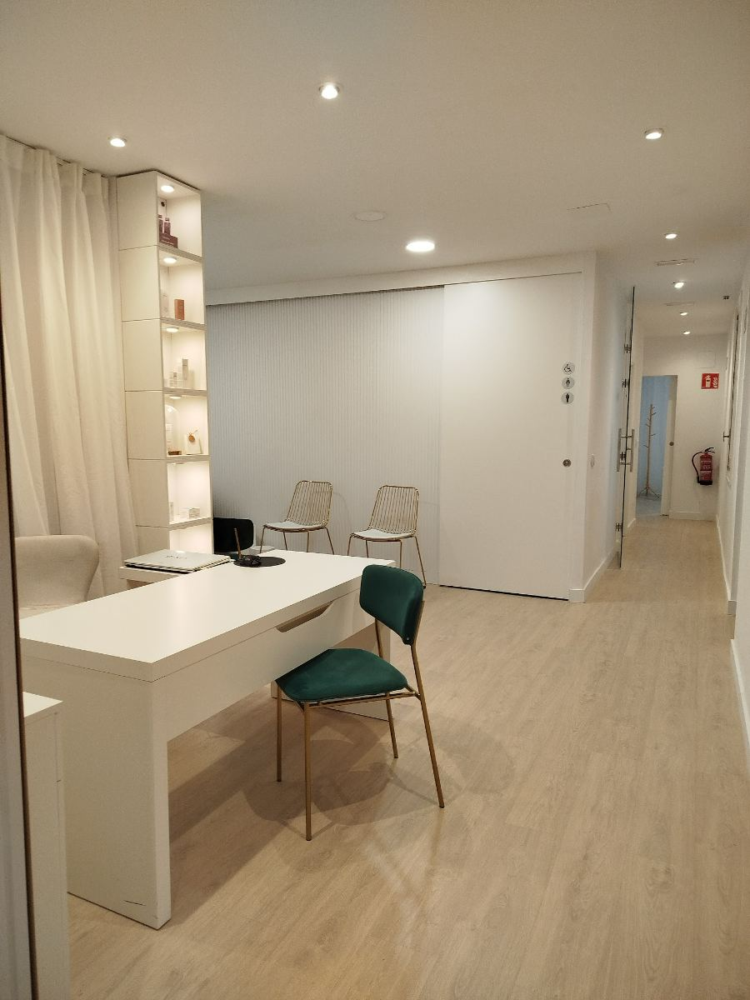

Todos los tratamientos requieren valoración médica previa. La indicación, la técnica y el producto los decide el equipo médico en consulta.
Quién te atiende
Unaconsultapensadaparaescuchar.
En BeLift cada valoración se hace sin prisas y sin protocolos en serie: primero entender qué te gustaría cambiar —y qué no—, después decidir contigo si un tratamiento tiene sentido.
Centro sanitario autorizado · CS 21796

BeLift · Salamanca
Cómo trabajamos
Primeroentender.Despuéstratar.Siempreacompañar.
01
02
03
01
Valoración
Escuchamos qué te preocupa, analizamos tu rostro en reposo y en movimiento y revisamos tu historial. Salimos con un diagnóstico, no con una lista de la compra.
02
Plan
Un plan por escrito, con prioridades, tiempos y presupuesto cerrado antes de empezar. Si lo más sensato es esperar, te lo decimos.
03
Seguimiento
Revisión a las dos semanas y ajuste si hace falta. Un tratamiento termina cuando tú y el equipo médico estáis de acuerdo en que el resultado es el correcto.
Inscrito en el Registro de Centros Sanitarios de la Comunidad de Madrid.
Consentimiento informado en cada tratamiento
Sabrás qué se hace, con qué y qué esperar. Antes, no después.
Producto homologado y trazable
Solo producto sanitario con marcado CE, aplicado por médicos, con trazabilidad de lote.

La consulta
Unespaciopensadoparaquebajeselritmo.
Una consulta, no una clínica en cadena. Cada cita tiene el tiempo que necesita, y la persona que te valora es la misma que te trata.
Cerrado · Apertura: 10:30 a.m. (mié)

Preguntas frecuentes
Loquenospreguntanantesdelaprimeracita.
No lo sabes, y no tienes por qué. Para eso está la valoración: analizamos tu rostro, escuchamos qué te gustaría y te proponemos un plan, o te decimos que ahora mismo no hace falta nada.
Se notará que estás mejor; no se notará por qué. Trabajamos con técnicas conservadoras y preferimos completar en una segunda sesión antes que pasarnos en la primera.
La mayoría de los tratamientos faciales se realizan en consulta, en menos de una hora, con molestias leves y sin baja. Te lo explicamos caso por caso, porque depende del tratamiento y de tu piel.
Solo producto sanitario homologado (marcado CE) y, cuando el tratamiento lo requiere, medicamentos sujetos a prescripción, cuya indicación decide el equipo médico tras valorarte. Por normativa no publicitamos marcas ni medicamentos en esta web; en consulta te explicamos con detalle qué usamos y por qué.
El presupuesto se cierra en la valoración, por escrito y antes de empezar. Cada plan es distinto y por eso no publicamos tarifas: sería prometer un tratamiento antes de haberte visto.
En consulta, con el consentimiento expreso de cada paciente y siempre en su contexto. No publicamos imágenes de pacientes en la web: su intimidad vale más que nuestra publicidad.
Por WhatsApp o por teléfono. Te contestamos personalmente y te proponemos fecha para la valoración.
Tu valoración
Empecemospormirartucaraconcalma.
Cuéntanos qué te gustaría y te proponemos día y hora para una valoración con el equipo médico. Sin compromiso de tratamiento.